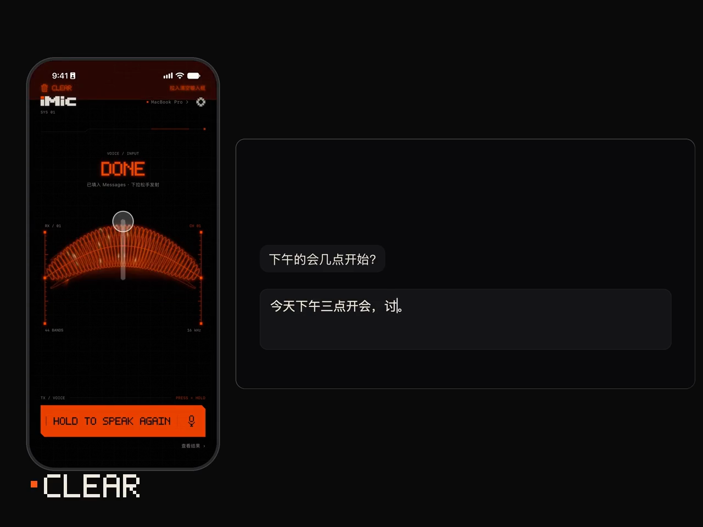
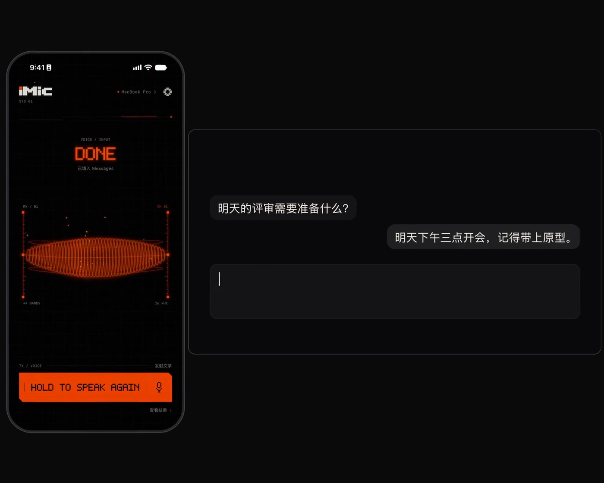
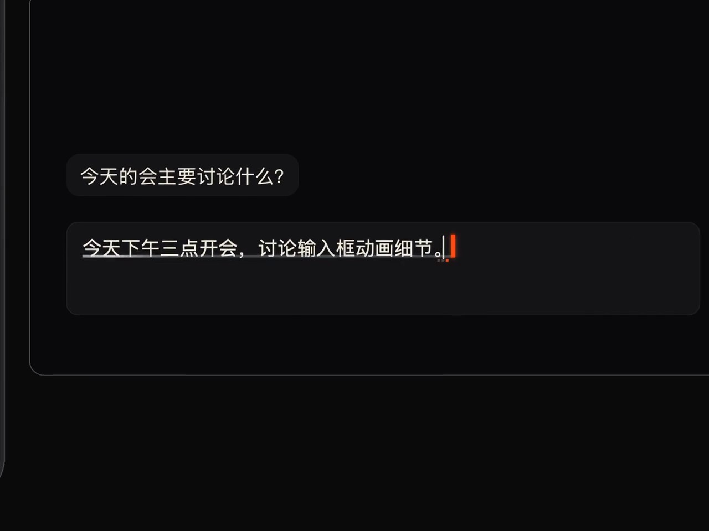
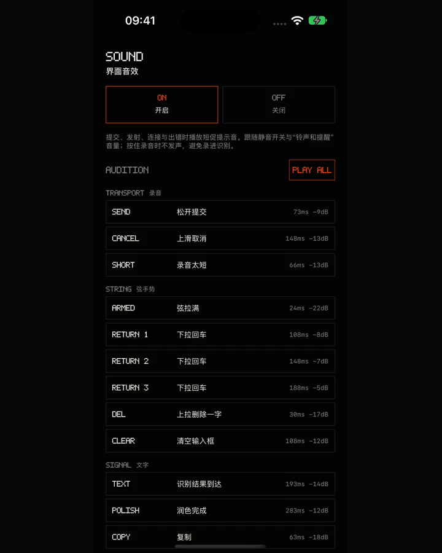

01 / 03
下一步，指尖就能完成。
- 下拉松手发射回车
- 上拨删字，保持连删
- 左右移动光标
- 拉到顶部请求清空

IPHONE → MAC
Mac 上任何能打字的地方，都能用。
iPhone 当 Mac 的麦克风。
说完松手，文字就落进当前输入框。
macOS 13+ · iOS 17+
需要你自己的阿里云百炼 API Key

聊天、邮件、文档，或随手一个搜索框。
开启 Mac 辅助功能权限，像用键盘一样输入。
示意动画 · 同一句话，落进不同地方。终端里，命令是否执行由你按回车决定。
切换了应用？文字先留住。录音时记录目标应用；识别结束时若前台变化，不自动输入，保留结果供你复制。
终端里，多行变一行。换行替换为空格，多行结果不会逐行执行。命令是否运行，由你按下回车决定。
已测试：TextEdit、Safari、Chrome、Terminal、Cursor、Zed、iTerm、Otty。实时预览、润色扫光与清空效果因应用而异，详见常见问题。
一根弦，一次按住。以下均为 App 与 Mac 真实界面录制。

一道光沿文字扫过输入框，随润色后的新文字收尾，让每次改写都有落点。
扫光可关闭 · macOS 14+ · 部分定位需屏幕录制权限

松手、回车、删除，各有短促、克制的芯片音。喜欢安静？在声音设置里关掉就好。

一个百炼 Key，识别和润色都能用。口语整理成书面文字，也可以换个说法。
以下均为手写示例，展示模式风格，不代表每次生成的结果。支持中文、英文、日文、韩文输出。
帮我把今天讨论的交互细节整理一下，整理成一页说明。
↓把今天讨论的交互细节整理成一页说明。
列出当前目录，包括隐藏文件。
↓ls -la
今天有点累，明天再继续吧。
↓今日稍倦，明日再续。
这件事我们明天再说。
↓这件事，就留到明天，明天再说。
这个办法真的不错。
↓噢，老伙计，这个办法可真不错。
终端命令模式只输出单行命令，不会自动执行。可选百炼、DeepSeek 官方或自定义兼容服务；服务、Key 与模型在 Mac 设置。
iMic 没有用于接收录音、识别文字或服务 Key 的自建服务器。
优先局域网直连，逐帧 AES-GCM 加密；同一 Wi-Fi 不可用时，可开启蓝牙兜底，速度取决于设备与环境。
应用内填写的 Key 保存于 Mac 的 ~/Library/Application Support/iMic/credentials.json，文件权限 0600。也支持自行通过环境变量提供。
Mac 直接把音频发给百炼。开启润色时，文字发给选定服务；iPhone 的 Apple Speech 临时预览也可能使用 Apple 在线服务。
本站不追踪、无统计、无 Cookie。App 的服务商数据处理规则以其条款和账号设置为准。完整隐私说明 ↗
下载 iMic，拖进「应用程序」并打开。按向导填入百炼 API Key，再开启辅助功能权限。
如何获取百炼 API Key？ ↗通过 TestFlight 安装 iMic，打开后按引导操作。公开测试状态见下方。
两端连到同一 Wi-Fi，在 iPhone 选择自己的 Mac，输入 Mac 显示的 6 位配对码。完成。
留在菜单栏，随时接住你的话。
下载 iMic for MacMac 版需要在 Mac 上下载。仍然直接下载 ↗
iMic 官网下载链接已通过 Apple 公证。
校验：SHA256SUMS.txt · 所有版本 ↗
把手机，变成一件趁手的输入乐器。
通过 TestFlight 安装 ↗1. 打开百炼控制台，用阿里云账号登录；没有账号请先注册并完成实名认证。
2. 右上角选择「华北2（北京）」，点「创建 API Key」，权限选「全部」。
3. 复制 Key，粘贴到 Mac 向导。请在北京地域创建，套餐 Key（Token Plan、Coding Plan）不能用于 iMic。识别和润色按百炼用量计费，新用户在北京地域有免费额度。
推荐同一 Wi-Fi，并允许本地网络访问。访客或公司网络可能禁止设备互访；不行时可在 Mac 设置开启蓝牙兜底，速度可能较慢，长录音需要等待补传。
已有测试覆盖 TextEdit、Safari、Chrome、Terminal、Cursor、Zed、iTerm、Otty。输入与扫光能力因应用而异，无法核验的输入框可能只接收最终结果；无法核验的编辑器或终端会拒绝清空。
新安装默认开启实时预览，可在 Mac 设置中关闭「实时预览与逐字输入」。部分应用使用键盘兼容模式，无法独立核验应用自行改稿或丢键，可能重复或误删；手动按键、点击或切换应用后，本轮停止修订。无法监视用户接管且无法核验范围时，只输入最终结果。
高级用户可以在所有版本下载 IPA，自行签名安装。常规安装请等待 TestFlight 公开测试开放。
会发送到你使用的服务商：Mac 将音频发往百炼；启用润色会把识别文字发往选定服务。iPhone 的 Apple Speech 临时预览可能使用 Apple 在线服务。iMic 没有接收这些数据的自建服务器。详见隐私说明。
用来向你选定的前台应用输入文字和编辑按键。由你在系统设置中授权或撤销，iMic 不会修改系统权限设置。
iMic 会自动检查更新，也可以在 Mac 菜单中点击「检查更新…」。在「设置 → 通用」可以关闭自动检查，或开启自动下载并安装更新。
GitHub 在部分网络下可能较慢，可以稍后重试，或到所有版本手动下载。
发邮件至 i0.0ia@qq.com，或提交 GitHub Issue。请附版本和复现步骤，公开反馈中不要包含 API Key、配对令牌或私人录音。